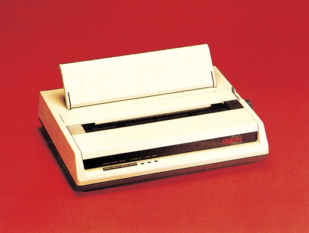
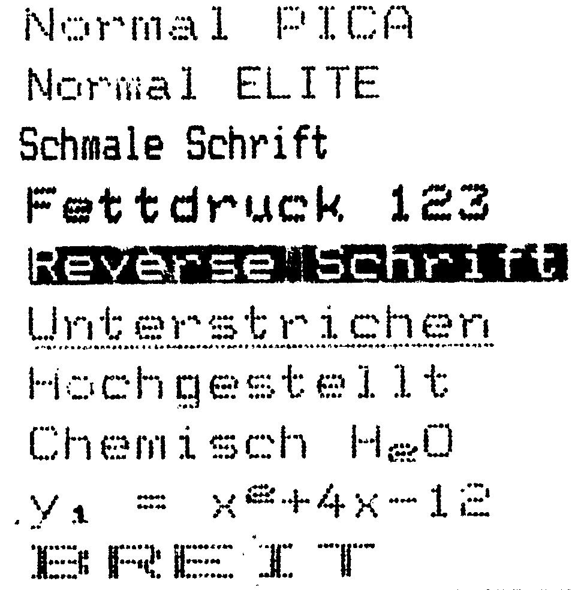
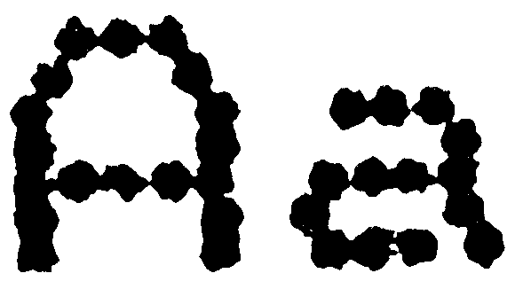

Microline 182 – der schafft Platz
Der Microline 182 ist direkt an den C 64 anschließbar. Trotzdem muß man nicht auf die Vorteile eines grafik- und umlautfähigen Druckers verzichten.
Der Microline 182 (Bild 1) ist ein 9 x 9 Matrixdrucker, der mit einer Centronics-Schnittstelle oder mit dem seriellen IEC-Bus des C 64 geliefert wird.

Nachdem das Interesse am Microline 182 geweckt war, galt es, die Farbbandkassette einzulegen. Ohne jede Mühe und mit sauberen Fingern läßt sich die Aufgabe erledigen. Die Kassette wird über den Druckkopf des Microline 182 geschoben und mit einem leichten Druck eingerastet. Dabei sitzen Kopf und Kassette auf einem beweglichen Schlitten, der sauber auf zwei Schienen gelagert ist. Bei genauerem Hinsehen stellt man fest, daß sich noch ein kleiner Motor auf diesem Schlitten befindet. Über ein Getriebe greift ein Zahnrad in eine horizontal am Boden des Druckers angebrachte Zahnstange.
Die zweite Überraschung gab es beim Einlegen des Papiers: Einschieben, am Handrad drehen — fertig. Ohne Verheddern und schrägen Einzug. Die Walzenanordnung ist ähnlich einer Schreibmaschine, wobei die Stachelwalzen direkt in die Schreibwalze integriert sind. Ebenso leicht lassen sich Einzelblätter, Rollenoder Endlospapier einlegen. Die Stachelwalzen lassen sich einfach und sicher den Gegebenheiten anpassen und sind nach dem Feststellen unverrückbar arretiert. Für alle, die ihren Drucker auf einen Ständer stellen möchten, haben die Konstrukteure auf der Geräteunterseite einen ausreichend großen Schlitz angebracht, um das Papier von unten zuzuführen.
Mit acht DIP-Schaltern werden die Papierlänge eingestellt, einer aus neun Zeichensätzen ausgewählt, die Geräteadresse eingestellt und zwischen normaler oder einer höheren Auflösung im Grafikmodus entschieden. Zugänglich ist die Schalterreihe nach Entfernen einer Schraube und Abnehmen eines kleinen Deckels an der Oberseite.
Die von dem Referenzdrucker der Preisklasse II Star (siehe Artikel »So testen wir« in dieser Ausgabe) gewohnte Vielfalt an Schriftarten und Darstellungsformen findet man beim Microline 182 nicht. Allerdings reicht das Angebot für den üblichen Druckeralltag aus. Pica, Elite, Schmal- und Breitschrift, Fettdruck, Hoch- und Tiefstellen sowie Negativschrift sind als Features vorhanden (Bild 2 und 3). Auch kann mittels ESC-Befehlen zwischen den Zeichensätzen hin- und hergeschaltet werden. Gerade diese Zeichensätze sind es, die den Microline 182 von anderen Druckern unterscheiden. Während man bei vielen Druckern, die sich anstrengen, möglichst gut an den C 64 angepaßt zu sein, keine Umlaute findet, hat der ML 182 sie. In einem der zehn Zeichensätze wurde einfach auf ein paar (unwichtige) Grafikzeichen verzichtet und der Zeichensatz an den richtigen Stellen mit den deutschen Sonderzeichen ausgestattet.


Der Microline 182 ist im Gegensatz zum MPS 802 grafikfähig. Im »Bit Image Modus« kann er entweder 60 oder 120 Punkte pro Inch darstellen (Tabelle). Damit ist er zwar kein ausgesprochener Zeichenkünstler, aber für einfache Hardcopys zum Beispiel mit Print Shop, Simons-Basic oder Hi-Eddi reicht die Grafikfähigkeit vollkommen aus. Ein wesentlicher Vorteil der Centronics-Version des ML 182, nämlich seine NLQ-Schrift, wurde bei der Commodore-Version weggelassen.
| Name des Druckers | Microline 182 | ||
| empfohlener Preis | 1099 Mark incl. | ||
| Unterstreichen | Ja | ||
| Proportionalschrift | nein | ||
| Zeichenmatrix | 9 x 9 | ||
| NLQ-Matrix | — | ||
| Papierbreiten | 127 — 254 mm | ||
| Zeichenvorrat | 2 CBM + 8 intern. | ||
| Papierarten | Endlos, Rolle, Einzelblatt | ||
| Durchschläge | 3 | ||
| Zeichen/Zeile | bis 137 | ||
| Selbsttest | ja | ||
| Hexdump | nein | ||
| Autom. Einzelbl. | nein | ||
| Pufferspeicher | nein | ||
| Rückwärtstr. | nein | ||
| Ladb. Zeichensatz PROOF | nein | ||
| Probetext | 2 46 Minuten | ||
| Geschwindigkeit | 120 ang. / 110 gem. | ||
| NLQ-Geschwin. | — | ||
| Grafikmodi | 60 und 180 Punkte pro Inch | ||
| Funktionstasten | LF, FF, TOF, SELECT | ||
| Ausstattung | Handbuch (engl.) Papierseparator, Farbband | ||
| Schriftarten | Pica, Elite, Revers, Hoch, Tief, Breit, Fett | ||
| Sonderfunktionen | — | ||
Qual der Wahl
Wer sich mit dem Gedanken trägt, seinen C 64 um einen ML 182 zu erweitern, hat keine leichte Wahl. Er kann sich zwischen einer Version mit Centronics-Interface und NLQ-Schrift aber ohne Commodore-Anpassung und einer Version mit bestens gelungenem Commodore-Befehlssatz, aber ohne NLQ-Schrift entscheiden. Auch der Preis hilft dabei nicht weiter, denn beide Modelle kosten jeweils 1099 Mark. Für welche Variante man sich letztendlich entscheidet, kann nur durch ein genaues Abschätzen der eigenen Wünsche entschieden werden.
(E. Konther/aw)Info: Okidata GmbH, Emanuel-Leutze-Str. 8, 4000 Düsseldorf 1